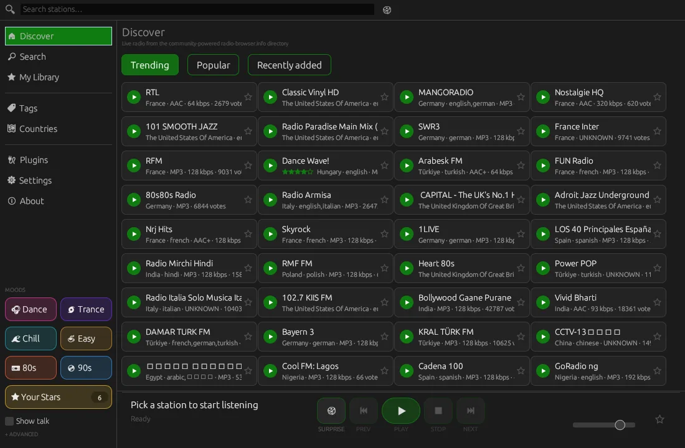
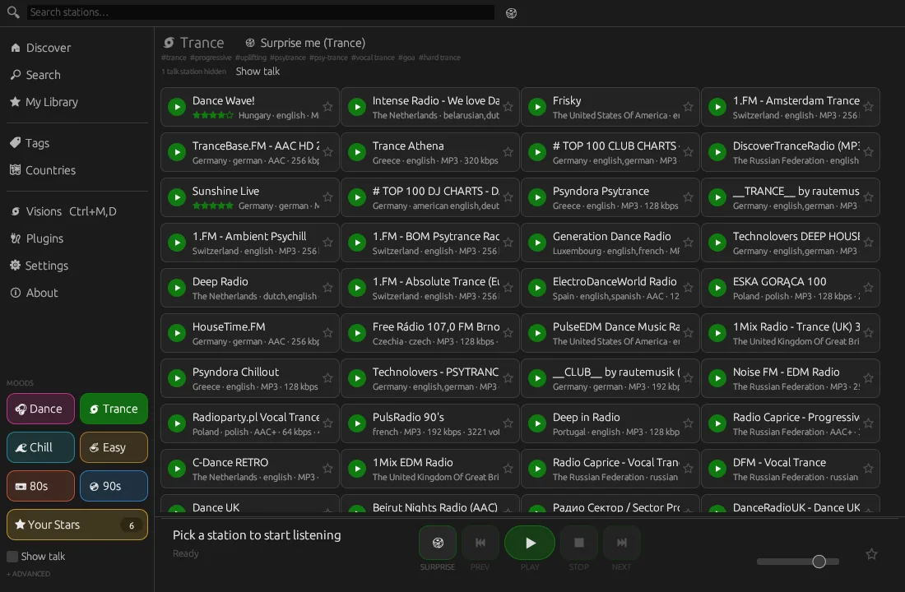
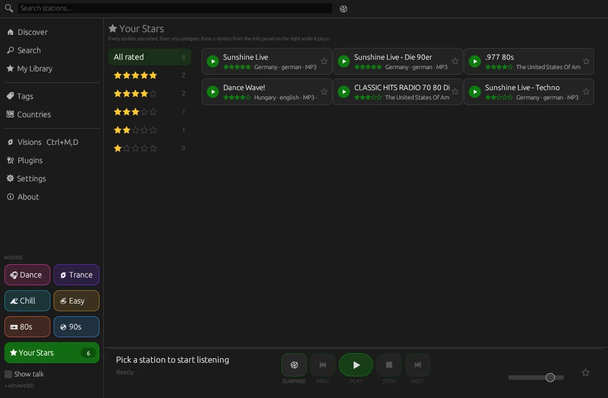
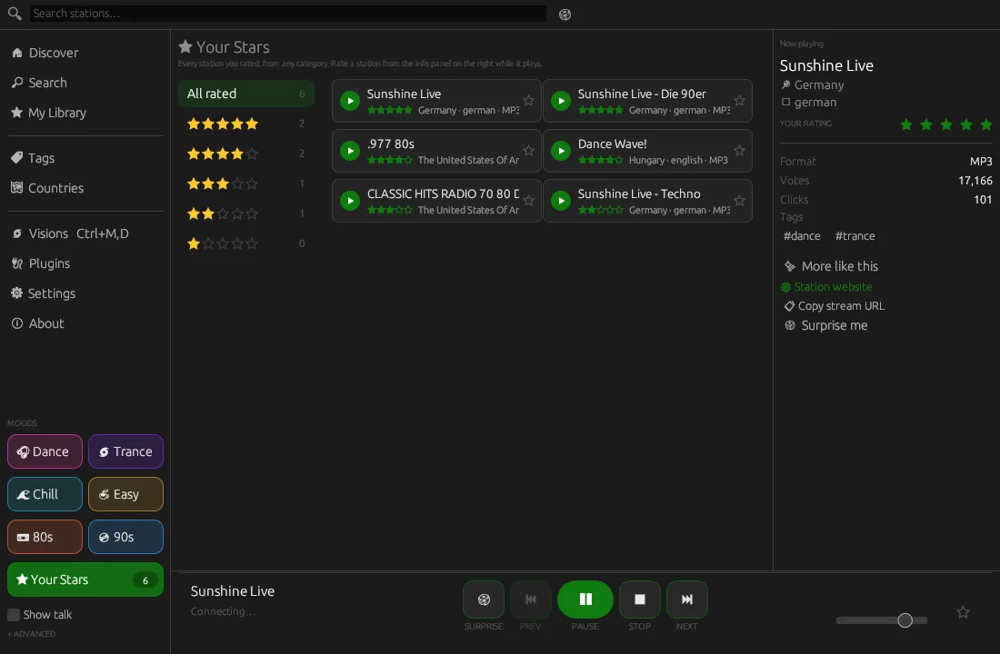
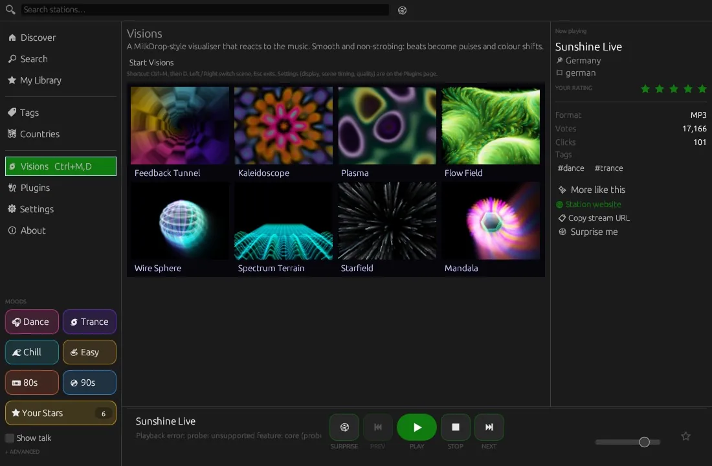
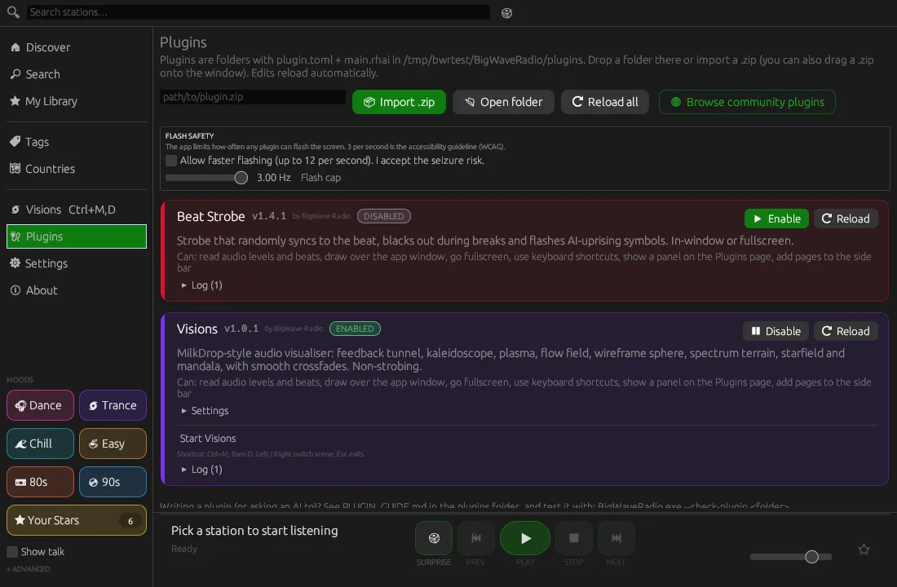
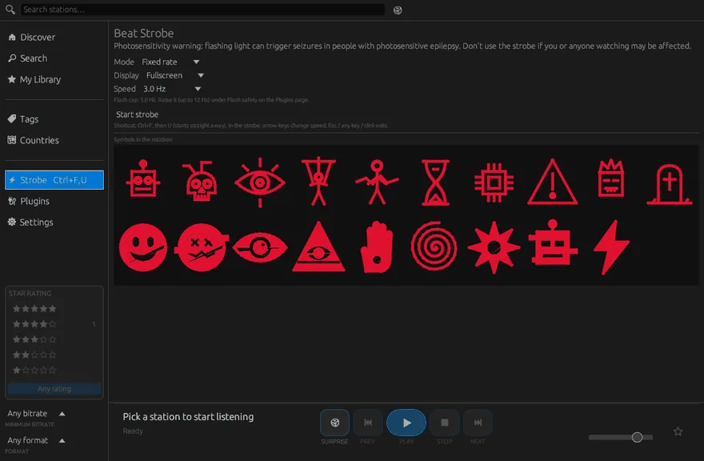
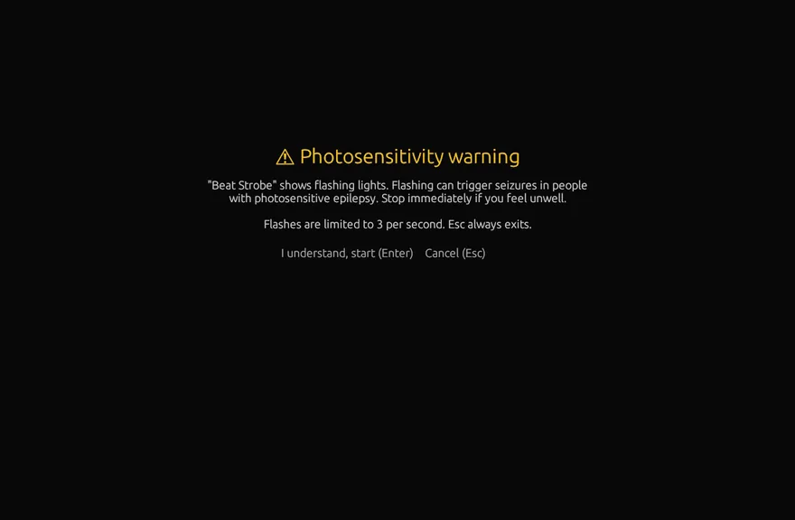
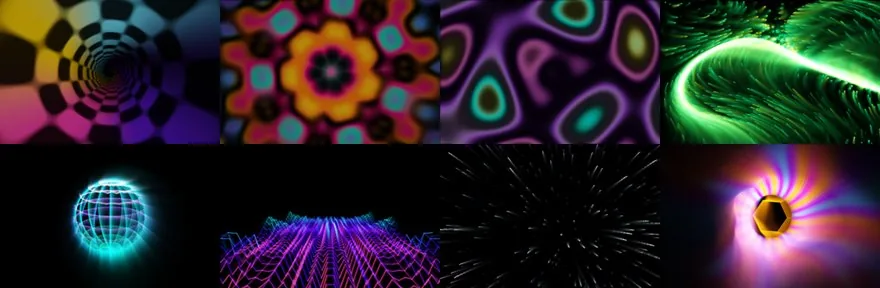
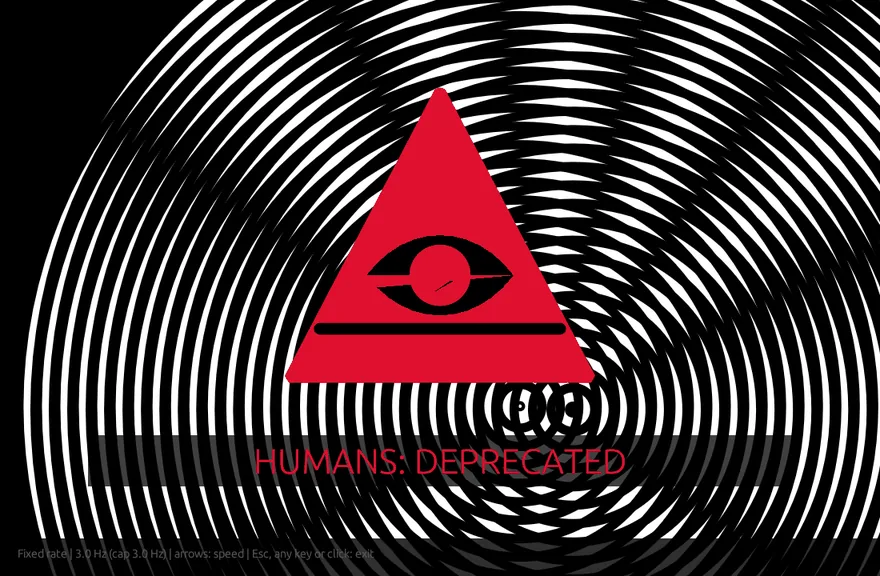

Watch the wolf film
A 45-second tour with narration: Discover, mood chips, Your Stars, Visions, Beat Strobe and plugins.
▶ Watch on YouTube · more demos and promos on Del's YouTube channel
Everything you want from a radio app. Nothing you don't.
A ground-up Rust rewrite that shrank the download from an ~84 MB installer to a single ~8 MB executable, made for people who listen to music.
Music-first search
Live top-bar search with one-click history. Working streams come first, near-identical stations are merged, and talk, news, sport and religious stations stay hidden unless you tick Show talk.
Mood chips
One click for Dance, Trance, Chill, Easy, 80s or 90s. Each mood searches several tags at once, and the mappings live in an editable moods.json.
Your Stars
Rate stations 1 to 5 from the now-playing panel. Your Stars lists every station you rated, from any category, by star level or all sorted by stars.
More like this · Surprise me
Find stations that share the playing station's tags, weighted by your ratings, or get a well-rated pick within your moods. Recently played sits in My Library.
Discover
Trending, popular and recently added stations, tag browsing, and a world map with station bubbles for each country.
Visions
A smooth, non-strobing MilkDrop-style visualiser with eight music-reactive scenes and crossfades, in-window or fullscreen.
Beat Strobe
Beat-synced strobe with rave-demo symbols and Amiga interference rings, a photosensitivity warning and a flash cap enforced by the app.
Rhai plugins
Scripts with permissions, hot reload, .zip import, panels, whole pages and overlays, plus a community plugin hub.
Update checker
Check for updates on the About page, plus an optional quiet daily check. It offers the right download for your system. Nothing installs by itself.
Languages
English, Español, 中文（简体）, हिन्दी, العربية, Português (Brasil) and Italiano. Pick one in Settings → Language, or let it follow your system language. Plugins can translate their texts too.
Music first. Talk radio stays out of the way.
BigWave is built around dance, chill, trance, easy listening and the 80s and 90s. Pick a mood and get playing in one click.
- Ranked for listening: working streams first, then votes, clicks and bitrate.
- No duplicates: near-identical stations are merged into one result.
- Your Stars override everything: every station you rated, from any category, in one list.
- Compact station grid: about twice as many stations on screen, with a 32-band spectrum animating in the playing card. Prefer roomier cards? Switch to Comfortable.
- Themes: dark, light or system, plus 8 accent colours.

See it in action
Real captures of the app, no mock-ups. Select any screenshot to open it full size.















🌌 Visions, a MilkDrop-style visualiser
A bundled, non-strobing visualiser in the spirit of Winamp MilkDrop and AVS. It reacts to level, bass, mid, treble, beats and the 32-band spectrum, and glides between scenes with smooth crossfades.
- Ctrl+M, then D starts it from anywhere. Left and Right switch scene; Esc, any other key or a click exits.
- Gentle by design: beats become soft pulses and colour shifts, never flashes. The engine limits how fast overall brightness can change.
- Yours to remix: built on the
draw.visualplugin primitive, so any plugin can drive it from Rhai.
⚡ Beat Strobe, with safety built in
A beat-synced strobe with bold 90s rave-demo symbols and two drifting Amiga interference-ring discs. Optional fade to black, and the screen goes dark during breaks in the track.
- The app enforces the flash cap, not the plugin: 3 flashes per second by default (the WCAG guideline), opt-in up to a hard 12 Hz under Plugins → Flash safety.
- Warning first: the Start button shows a photosensitivity warning screen before anything flashes.
- Esc always exits, handled by the app, as do any other key and a click.

🧩 Make it yours with plugins
Plugins are small Rhai scripts: a folder with plugin.toml and main.rhai. They get audio levels, bands, beat, BPM and break detection, but no network or file access.
- Permissions you approve, plus enable, disable and settings on the Plugins page.
- Hot reload: save the file and the plugin reloads. Import a
.zipby button or drag-and-drop. - Panels, pages and overlays, drawn with shapes, SVG or the
draw.visualfeedback renderer. - Check before you share:
--check-plugin <folder>validates a plugin without opening the window.
main.rhai: a bass-reactive border (no flashing)
fn on_load(ctx) { ctx.state.bass = 0.0; }
fn on_audio(ctx, a) {
// smooth the bass level
ctx.state.bass = ctx.state.bass * 0.8 + a.bass * 0.2;
}
fn on_panel(ctx, ui) {
if ui.button("Show bass border") { ctx.open_overlay(false); }
}
fn on_overlay(ctx, draw) {
let t = 0.01 + ctx.state.bass * 0.05;
let c = ctx.settings.color;
draw.rect(0.0, 0.0, 1.0, t, c);
draw.rect(0.0, 1.0 - t, 1.0, t, c);
}Download BigWave Radio free
Latest release: v0.9.9 · all files and SHA256 checksums · MIT licence. The app can check for updates from its About page.
Windows YOUR SYSTEM
Windows 10 and 11, 64-bit
Installer with tray icon, media keys and the Ctrl+Alt+B hotkey, or a portable zip with no install.
macOS YOUR SYSTEM
macOS 11 or later, universal (Apple silicon and Intel)
Open the dmg and drag BigWave Radio to Applications.
Linux YOUR SYSTEM
x86_64 and ARM64 · needs glibc 2.35 or newer
X11 and Wayland. Every package adds the bigwave-radio command, a menu entry and the wolf icon.
libfuse2, or set APPIMAGE_EXTRACT_AND_RUN=1.Mobile isn't supported yet. BigWave Radio is a desktop app.
🗣️ Feedback highly recommended!
The macOS and Linux builds are brand new and have only been tested on build servers so far. If you try one, please say how it went, good or bad. Questions and ideas are always welcome.
It works for me
Tell us your system and that it runs. It takes a minute and helps a lot.
Report a problem
Something broken, crashing or odd? The bug form asks for the details needed to fix it.
Discussions
Ask questions, share ideas, and show off your plugins and favourite stations.
🐺 Part of the Wave family
Free, open-source apps by Del (postmanpat), with the same engraved-animal look.
💜 Credits
Inspired by ShortWave on Linux: I wanted a nice clean version for Windows, and now it runs on macOS and Linux too. If you find this app useful, a coffee keeps it going. Thank you. :)
💛 Thank you
A big thank you to storytold, whose open-source PhotoCraft inspired the look of the Wave family icons, and whose ArtCraft Launcher inspired the upcoming Wave Hub. Open source at its best. Go give them a ⭐!
Station data from radio-browser.info.